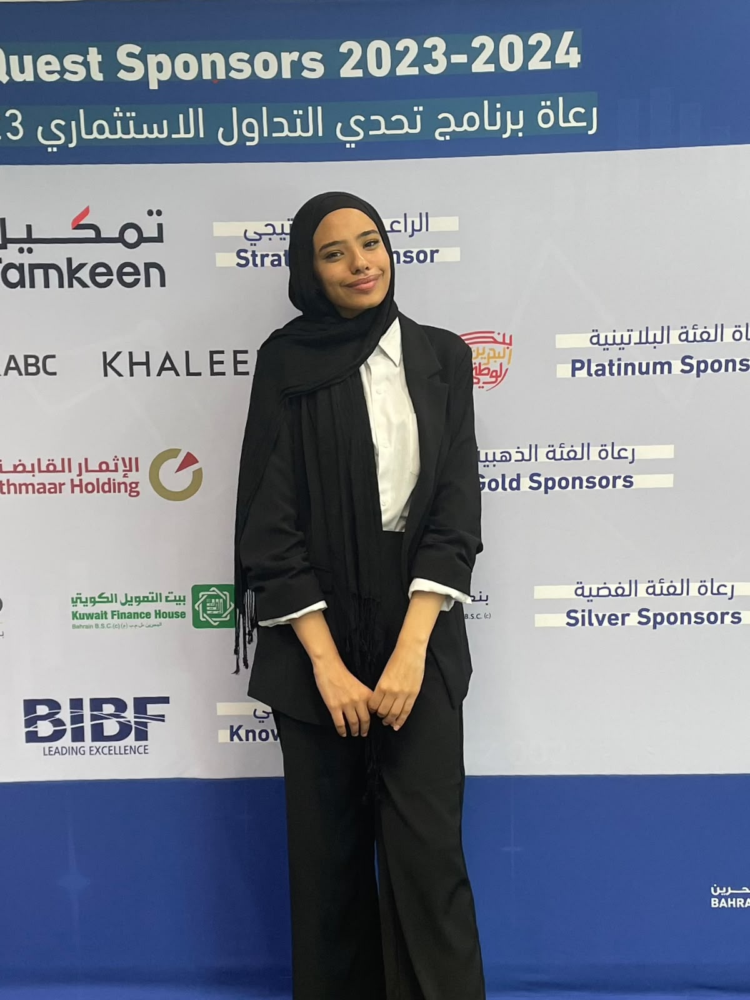
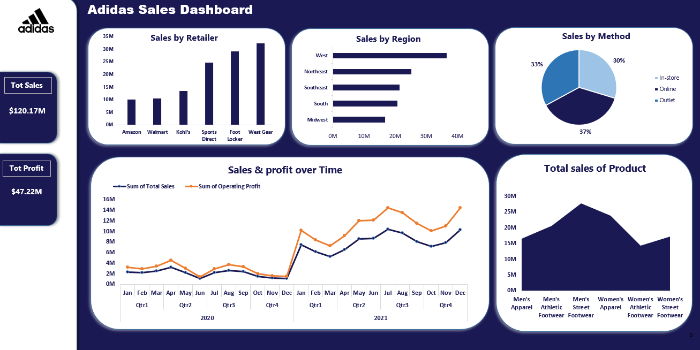
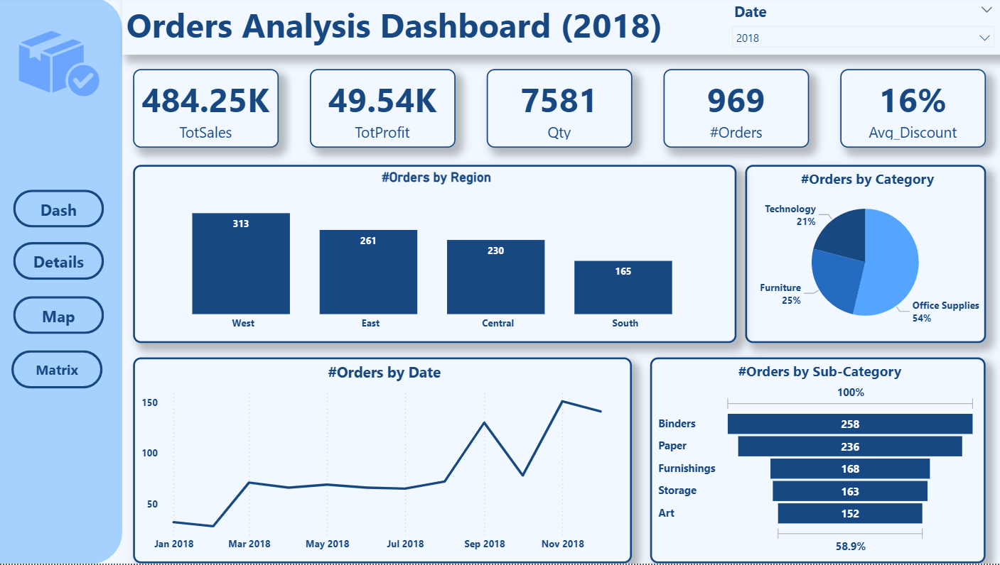
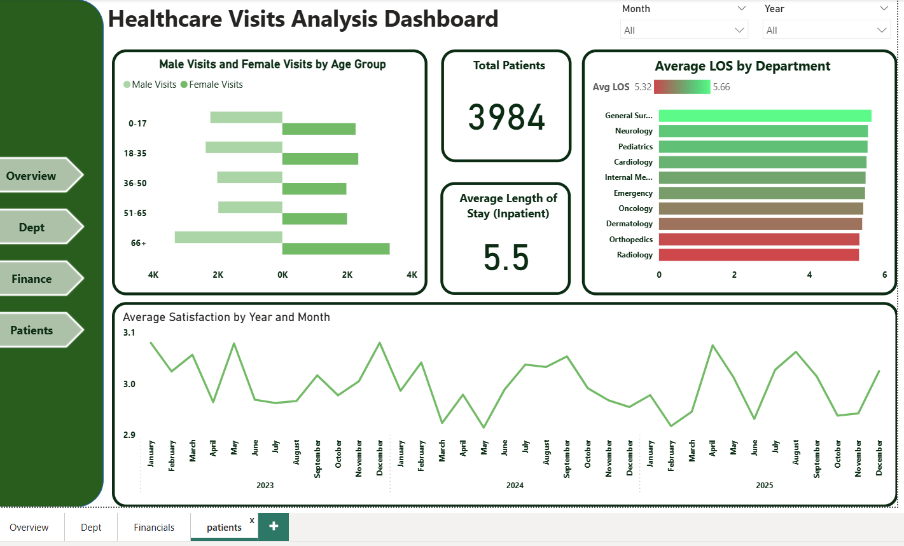
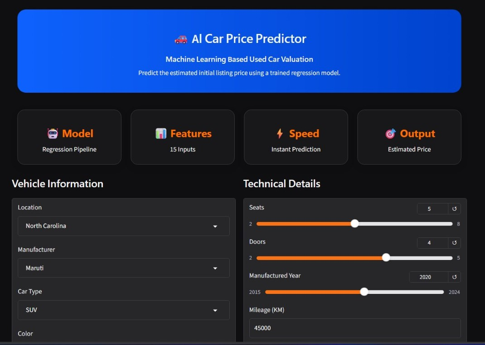
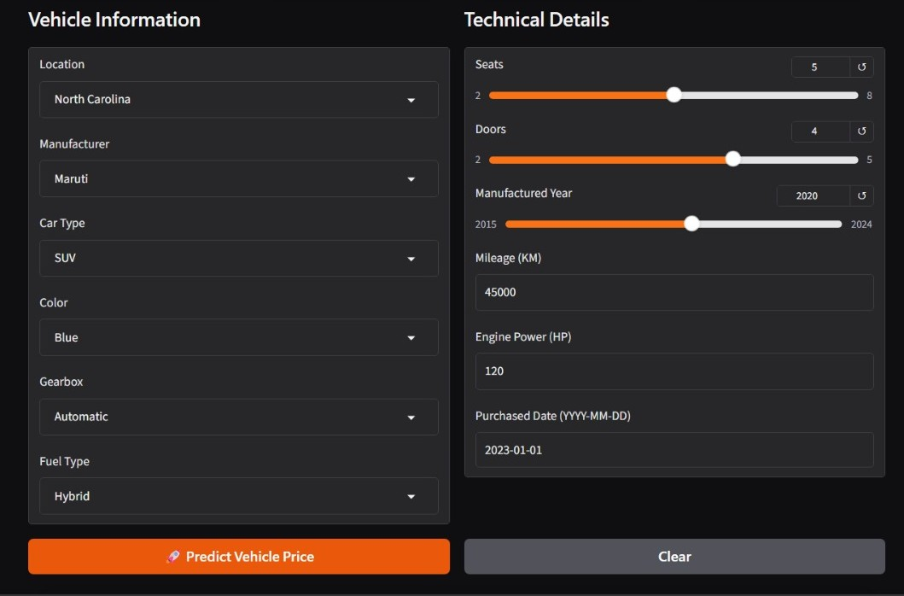
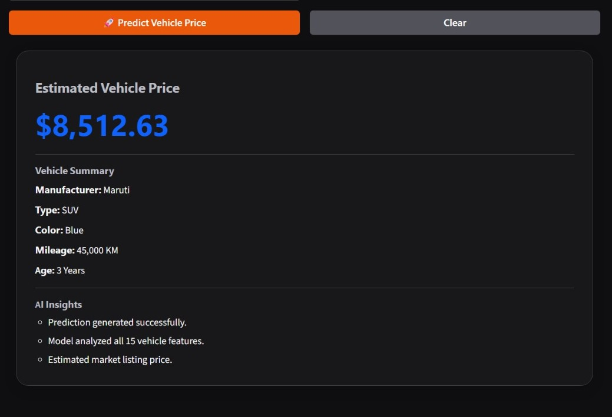

Data Analyst · Power BI Specialist
I turn business data into clear decisions.
I design interactive dashboards and analytical tools that help teams see what is changing, understand why it matters, and decide what to do next.

Rana Waleed Elzayat
Making data easier to understand—and harder to ignore.01 / About
I do more than build charts. I build a clearer view of the business.
I am a Data Analyst specializing in Power BI, business intelligence, and data visualization. I transform complex datasets into practical reporting systems that help businesses monitor performance, discover trends, and act with confidence.
My work combines data cleaning, modeling, KPI design, and visual storytelling across sales, finance, customers, operations, and healthcare. I care about dashboards that are not only polished, but genuinely useful.
I am currently a third-year Computers and Information student and a DEPI-certified Power BI Specialist.
02 / Selected work
Projects designed around real business questions.

01
Excel · Sales Analytics
Adidas Sales Dashboard
Created an interactive Excel dashboard to analyze sales performance across regions, products, retailers, and time periods.
- Challenge
- Turn a large sales dataset into a fast, usable performance view.
- Approach
- Power Query, Pivot Tables, Pivot Charts, slicers, and KPI cards.
- Outcome
- Surfaced top regions, product categories, seasonal trends, and leading retailers.

02
Power BI · Order Intelligence
Orders Analysis Dashboard
Built a centralized Power BI report for tracking orders, revenue, profit, customer behavior, and product performance.
- Challenge
- Give management one place to monitor commercial performance.
- Approach
- Power Query transformations, data modeling, DAX measures, filters, and trend analysis.
- Outcome
- Revealed regional demand, top categories, purchasing patterns, and revenue drivers.

03
Power BI · Healthcare Analytics
Healthcare Visits Dashboard
Designed a multi-page healthcare report for monitoring patients, length of stay, satisfaction, departments, and financial indicators.
- Challenge
- Make complex operational metrics easy for stakeholders to scan and compare.
- Approach
- Data cleaning, relationship modeling, calculated measures, KPI cards, and interactive navigation.
- Outcome
- Enabled faster monitoring of patient trends and more informed resource planning.



04
Python · Machine Learning
Used Car Price Predictor
Developed and deployed a machine-learning application that estimates used-car prices from vehicle characteristics.
- Challenge
- Help buyers and sellers estimate a fair listing price quickly.
- Approach
- Data preprocessing, feature engineering, regression modeling, evaluation, and web deployment.
- Outcome
- Delivered an instant prediction workflow based on 15 vehicle inputs.
03 / Capabilities
From raw files to decision-ready products.
Business Intelligence
Power BI, DAX, KPI design, data modeling, drill-through reports, interactive navigation.
Data Preparation
Excel, Power Query, SQL, data cleaning, shaping, validation, and relationship design.
Python Analytics
Python, Pandas, NumPy, exploratory analysis, feature engineering, and machine learning.
Technical Foundation
C++, structured problem solving, analytical thinking, and clear documentation.
Power BIExcelPower QuerySQLPythonPandasNumPyC++
04 / Education
Learning the theory—and building with it.
Bachelor's in Computers and Information
Third-year student developing a strong foundation in data, programming, systems, and analytical problem solving.
Power BI Specialist · DEPI
Professional training focused on business intelligence, Power BI development, data modeling, and dashboard delivery.
Have data that needs a clearer story?